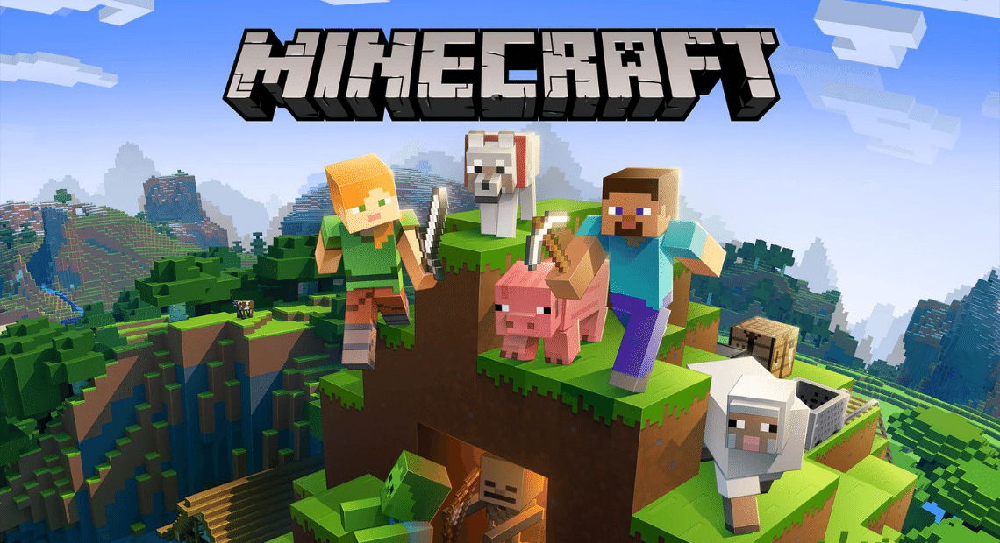

Home
Mijn favoriete spellen
Voorwoord
Ik kon niet kiezen welk spel ik het leukst vond daarom heb ik de drie leukste spellen gekozen
maar ze staan niet in een bepaalde volgorde.
Minecraft
Een van mijn drie favoriete spellen is minecraft omdat het een open world is dat het meeste word met de
spelers creativitijt
door verschillende aspecten van het spel zoals bouwen maar ook hoe je door het spel progrest. het
spelbestaat uit werelden
dat procedurally gemaaktzijn door "seeds" dat zijn codes hoe je computer de wereld moet maken.
Terraria
Een van mijn drie favoriete spellen is terraria omdat een 2d pixel-art adventure spel waarin je de wereld
verkent
en door de verschillende gebieden verkent terwel je aangevallen word door monsters en bosses die je moet
verslaan
om sterker en betere spullen te krijgen en maken of je bouwt een groote mooie basis voor jouw en allerlij
leuke NPC's.
Stardew valley
Een van mijn drie favoriete spellen is stardew valley, want het is een gezelige boederij simulator
met allerlij leuke content en missies dat op je boederij, berg, strand of de stad plaats vind zoals:
dieren verzorgen maar ook de mijn in gaan voor mineralen om je gereedschap te verbetere of voor het museum.
Je kan ook op andere skills werken alle skills zijn: farming, foraging, mining, fishing, combat.
maar zoals het al tussen de skills staat kan je ook wat minder vreedige acties doen zoals monster in de mijn
vermorden.
